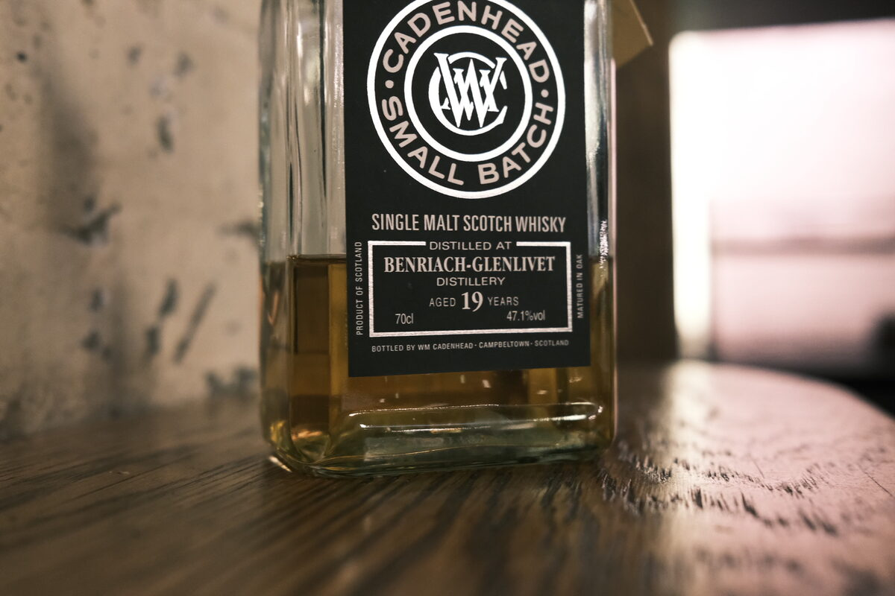

Benriach 1996 Cadenhead's 19 years 47.1% (undisclosed)
First up for World Whisky Day! Labelled as Benriach-Glenlivet. Cadenhead’s certainly loves that old (auld?) school naming…
Colour Gold.
Nose Orchard fruits – pears and green apples. Bananas, ricotta, peanut butter. A little resinous, oak and oak spices. Some grassiness and flowers. Malt and cream. Sweet herbal teas.
Palate Quite creamy. Apple and pear forward. Rich caramel chocolate sweetness – a little earthy. Some of that resin is still with us, as are some light spices: cinnamon, cloves. Thick and syrupy malt. A hint of eucalyptus.
Finish Milk chocolate. Oak and oak spices. More chocolate – chocolate milk. A little floral. Some fruit skins and boiled lollies.
Comments Conventional stuff. Pleasant. Sweet, fresh, and fruity. 84/100.

Posted by Dominic on 15 May 2021